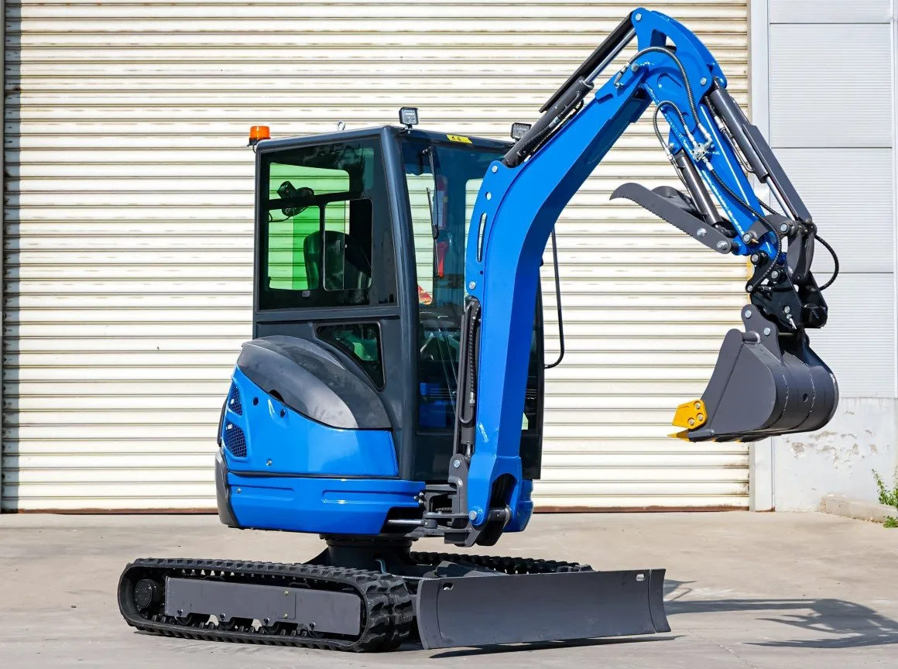

Mini-pelle 2,5 t · Réf. MP-25
Mini-pelle 2,5 tonnes moteur Kubota avec cabine
Plus de profondeur, une cabine fermée et des commandes pilotées : la mini-pelle du quotidien pour les artisans du terrassement.
- 2 250 kg réels
- 2,62 m de fouille
- Kubota D1105
21 990 € HTMachine neuve · livraison sur chantier sur devis